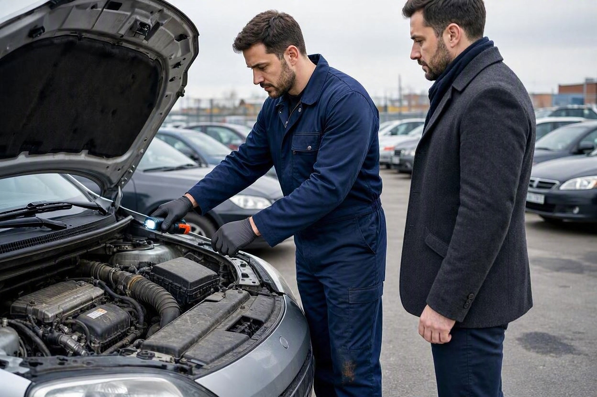

هزینه کارشناسی خودرو با خریدار است یا فروشنده؟ قبل یا بعد از بیعانه؟
درست وقتی روی قیمت به توافق رسیدهاید، این سؤال پیش میآید: کارشناسی را چه کسی حساب کند و کِی انجام شود؟ همین دو نکته ساده میتواند مسیر معامله را عوض کند.
در عرف رایج بازار ایران، هزینه کارشناسی خودرو معمولاً با خریدار است، چون بررسی بهنفع او و برای اطمینان از سلامت معامله انجام میشود. زمان درست هم پیش از پرداخت بیعانه است، نه بعد از آن. پرداخت بیعانه پیش از کارشناسی، قدرت چانهزنی و امکان انصراف بدون ضرر را کم میکند. با این حال، این یک قانون ثابت نیست و طرفین میتوانند طور دیگری توافق کنند.
- در بیشتر معاملات، هزینه کارشناسی را خریدار میپردازد چون بررسی برای اطمینان خودِ اوست.
- زمان درست کارشناسی، پیش از پرداخت بیعانه است تا اگر ایرادی بود، بدون ضرر کنار بکشید.
- گاهی فروشنده مطمئن، خودش خودرو را کارشناسی میکند تا فروش را سریعتر و شفافتر کند.
- اگر فروشنده اجازه کارشناسی پیش از بیعانه را نداد، همین یک نشانه هشدار است.
- هیچ قانون رسمی خرید و فروش این هزینه را بر عهده یک طرف نگذاشته؛ توافق طرفین تعیینکننده است.
هزینه کارشناسی با خریدار است یا فروشنده؟
پاسخ کوتاه این است که در بیشتر معاملات خریدار پرداخت میکند، اما این یک عرف است نه یک الزام قانونی. کارشناسی خودرو برای این انجام میشود که خریدار پیش از پرداخت پول، از سلامت فنی و بدنه خودرو مطمئن شود. چون سود مستقیم بررسی به خریدار میرسد، طبیعی است که هزینهاش هم با او باشد. برای آشنایی با اینکه یک بررسی کامل دقیقاً چه چیزهایی را پوشش میدهد، میتوانید به خدمات کارماچک برای بررسی خودرو نگاه کنید.
نکته مهم اینجاست که این موضوع کاملاً قابل مذاکره است. در معاملهای که فروشنده عجله دارد یا میخواهد اعتماد خریدار را جلب کند، ممکن است خودش هزینه را بپذیرد. پس بهجای اینکه فرض کنید قانونی وجود دارد، بهتر است همان ابتدا سر این موضوع صریح توافق کنید.
چرا معمولاً خریدار پرداخت میکند؟

دلیلش ساده و منطقی است: کسی که ریسک معامله را میپذیرد، کسی است که باید از سلامت کالا مطمئن شود. فروشنده معمولاً خودرو را میشناسد، اما خریدار در چند دقیقه بازدید نمیتواند همهچیز را بفهمد. کارشناسی این شکاف اطلاعاتی را پر میکند و چون این اطمینان برای خریدار ساخته میشود، هزینهاش هم منطقاً با اوست.
یک مزیت پنهان هم دارد. وقتی خریدار خودش کارشناس را انتخاب و هزینه را پرداخت میکند، از بیطرفی بررسی مطمئنتر است. اگر فروشنده کارشناس بیاورد، همیشه این تردید میماند که آیا گزارش کاملاً مستقل بوده یا نه. برای همین حتی وقتی فروشنده پیشنهاد میدهد کارشناس خودش را بیاورد، بهتر است خریدار روی کارشناس مستقل و مورد اعتماد خودش پافشاری کند.
قبل از بیعانه یا بعد از آن؟
این بخش از خودِ هزینه مهمتر است. کارشناسی باید پیش از پرداخت بیعانه انجام شود. منطق ساده است: بیعانه یعنی شما بخشی از پول را دادهاید و عملاً خودتان را به معامله متعهد کردهاید. اگر بعد از بیعانه ایرادی پیدا شود، پسگرفتن پول یا مذاکره دوباره سخت میشود و گاهی بخشی از بیعانه میسوزد.
بیعانه در معامله خودرو یعنی مبلغی که خریدار برای رزرو خودرو و نشاندادن جدیت خود پیش از تنظیم قرارداد نهایی میپردازد. وقتی این مبلغ پرداخت شد، توازن قدرت بهسمت فروشنده میرود. برای همین بهترین ترتیب این است که اول کارشناسی، بعد بیعانه. اگر میخواهید بدانید بیعانه در کل فرایند خرید کجای کار قرار میگیرد، چک لیست خرید خودرو دست دوم ترتیب درست مراحل را نشان میدهد.
پیش از بیعانه، خودرو را بررسی کنید
بهترین زمان کارشناسی، پیش از هر پرداختی است. یک بررسی تخصصی میتواند وضعیت فنی و بدنه خودرو را روشن کند تا با خیال راحتتر تصمیم بگیرید.
شروع کارشناسی خودروکِی منطقی است فروشنده هزینه را بدهد؟
گاهی پرداخت هزینه توسط فروشنده کاملاً منطقی و حتی بهنفع خودش است. فروشندهای که مطمئن است خودرویش سالم است، میتواند با ارائه گزارش کارشناسی، فروش را سریعتر و قیمت را محکمتر کند. اینجا کارشناسی به یک ابزار فروش تبدیل میشود، نه یک هزینه تحمیلی.
این حالتها را زیاد میبینیم:
- فروشنده میخواهد خودرو را سریع بفروشد و با گزارش سلامت، اعتماد خریدار را جلب میکند.
- خودرو کارکرد پایین و وضعیت خوبی دارد و فروشنده میخواهد این را مستند کند.
- خریدار مردد است و فروشنده برای بستن معامله، هزینه بررسی را میپذیرد.
- معامله از راه دور است و گزارش کارشناسی جای بازدید حضوری خریدار را میگیرد.
حتی در این حالتها، اگر گزارش را فروشنده تهیه کرده، خریدار حق دارد برای اطمینان بیشتر یک بررسی مستقل هم انجام دهد. یک گزارش سلامت خوب مانع بررسی دوباره نمیشود، بلکه آن را سادهتر میکند. برای اینکه بدانید یک بررسی مستقل باید شامل چه چیزهایی باشد، راهنمای بررسی کامل خودرو قبل از خرید را ببینید.
روش توافق منصفانه بر سر هزینه
بهجای کشمکش بر سر چند درصد هزینه، بهتر است توافق را شفاف و زودهنگام انجام دهید. این ترتیب معمولاً بدون تنش پیش میرود.
- همان ابتدا مطرح کنید: پیش از توافق روی قیمت نهایی، بگویید که خودرو باید کارشناسی شود.
- کارشناس مستقل را خریدار انتخاب کند: برای بیطرفی گزارش، انتخاب کارشناس با طرفی باشد که هزینه را میدهد یا مورد اعتماد هر دو باشد.
- زمان را پیش از بیعانه بگذارید: توافق کنید بیعانه فقط بعد از نتیجه کارشناسی پرداخت شود.
- نتیجه را مبنای قیمت کنید: اگر کارشناسی ایراد قابلقبولی نشان داد، قیمت را بر همان اساس اصلاح کنید، نه با حدس.
یک راه منصفانه رایج هم این است: اگر کارشناسی خودرو را سالم نشان داد، خریدار هزینه را میپذیرد؛ و اگر ایراد پنهان قابلتوجهی پیدا شد که فروشنده اعلام نکرده بود، هزینه با فروشنده باشد. این توافق ساده، هر دو طرف را به شفافیت تشویق میکند.
کارماچک خدمات کارشناسی خودرو را برای بررسی فنی، رنگ، بدنه و عوامل مؤثر بر ارزش معامله ارائه میدهد. فقط ایراد خودرو را شناسایی نمیکنیم؛ اثر آن روی هزینه تعمیر و ارزش واقعی معامله را هم مشخص میکنیم.
نشانههای هشدار در زمان توافق
گاهی طرز برخورد فروشنده با موضوع کارشناسی، بیشتر از خود خودرو حرف میزند. این نشانهها را جدی بگیرید.
- مخالفت با کارشناسی پیش از بیعانه بدون دلیل روشن.
- اصرار بر استفاده فقط از کارشناس معرفیشده توسط خود فروشنده.
- عجله غیرعادی برای بستن معامله و گرفتن بیعانه.
- ارائه گزارش کارشناسی قدیمی بهجای بررسی روز خودرو.
- حاضرنشدن به بردن خودرو به مرکز کارشناسی مستقل.
هیچکدام از اینها بهتنهایی دلیل قطعی مشکل نیست، اما وقتی چند مورد کنار هم جمع شوند، بهتر است محتاطتر باشید و پیش از پرداخت، بررسی تخصصی خودرو را انجام دهید.
جمعبندی
در بیشتر معاملات، هزینه کارشناسی با خریدار است، چون اطمینان حاصل از آن هم برای خریدار ساخته میشود. اما مهمتر از اینکه چه کسی پرداخت میکند، زمان آن است: کارشناسی باید پیش از پرداخت بیعانه انجام شود تا در صورت وجود ایراد، دستتان برای مذاکره یا انصراف باز بماند.
این موضوع قانون ثابتی ندارد و هر دو طرف میتوانند طور دیگری توافق کنند. بهترین کار این است که همان ابتدا و پیش از هر پرداختی، صریح و شفاف درباره هزینه و زمان کارشناسی به توافق برسید.
با توافق روشن، معامله مطمئنتر
وقتی زمان و هزینه کارشناسی از ابتدا مشخص باشد، معامله شفافتر پیش میرود. برای بررسی وضعیت خودرو پیش از بیعانه، درخواست کارشناسی ثبت کنید.
ثبت درخواست کارشناسیسؤالات متداول
هزینه کارشناسی خودرو قانوناً با چه کسی است؟
هیچ قانون رسمی خرید و فروش، هزینه کارشناسی را بر عهده خریدار یا فروشنده نگذاشته است. این موضوع کاملاً به توافق طرفین بستگی دارد. در عرف رایج بازار، معمولاً خریدار پرداخت میکند چون بررسی برای اطمینان خودِ اوست، اما طرفین آزادند طور دیگری توافق کنند.
کارشناسی را قبل از بیعانه انجام دهم یا بعد؟
قبل از بیعانه. اگر پیش از پرداخت هر مبلغی خودرو را کارشناسی کنید، در صورت وجود ایراد میتوانید بدون ضرر کنار بکشید یا قیمت را اصلاح کنید. پرداخت بیعانه پیش از کارشناسی، قدرت چانهزنی شما را کم میکند و پسگرفتن پول را سختتر میکند.
اگر فروشنده اجازه کارشناسی قبل از بیعانه ندهد چه کنم؟
این خودش یک نشانه هشدار است. فروشندهای که به سلامت خودرو مطمئن باشد، معمولاً مشکلی با بررسی پیش از بیعانه ندارد. اگر با دلیل روشن مخالفت کرد، محتاط باشید و پیش از هر پرداختی روی کارشناسی مستقل پافشاری کنید یا از معامله فاصله بگیرید.
اگر فروشنده گزارش کارشناسی دارد، باز هم بررسی لازم است؟
بستگی به تازگی و بیطرفی گزارش دارد. اگر گزارش قدیمی است یا کارشناس را فروشنده انتخاب کرده، بهتر است یک بررسی مستقل و بهروز هم انجام دهید. گزارش موجود میتواند نقطه شروع خوبی باشد، اما جای کارشناسی مستقل روز را نمیگیرد.
آیا میشود هزینه کارشناسی را بین خریدار و فروشنده تقسیم کرد؟
بله، این یک توافق رایج و منصفانه است. برخی طرفین توافق میکنند اگر خودرو سالم بود خریدار هزینه را بدهد و اگر ایراد پنهان قابلتوجهی پیدا شد فروشنده پرداخت کند. تقسیم مساوی هزینه هم گزینه دیگری است. مهم این است که توافق پیش از انجام کارشناسی روشن باشد.
کارشناس را خریدار انتخاب کند یا فروشنده؟
برای بیطرفی گزارش، بهتر است کارشناس مستقل و مورد اعتماد باشد و ترجیحاً طرفی که هزینه را میدهد یا خریدار او را انتخاب کند. اگر فروشنده اصرار دارد فقط از کارشناس معرفیشده خودش استفاده شود، بهتر است برای اطمینان، بررسی مستقل هم انجام شود.